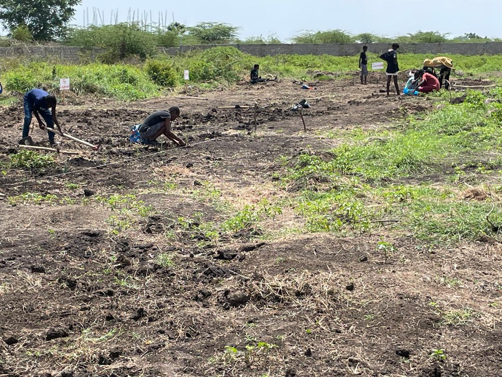
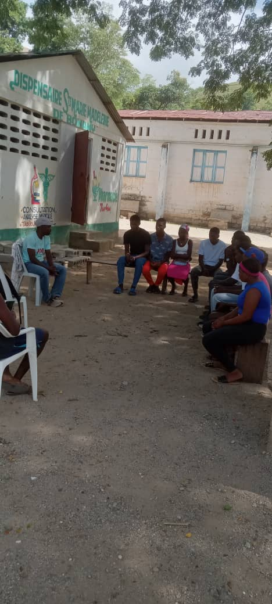
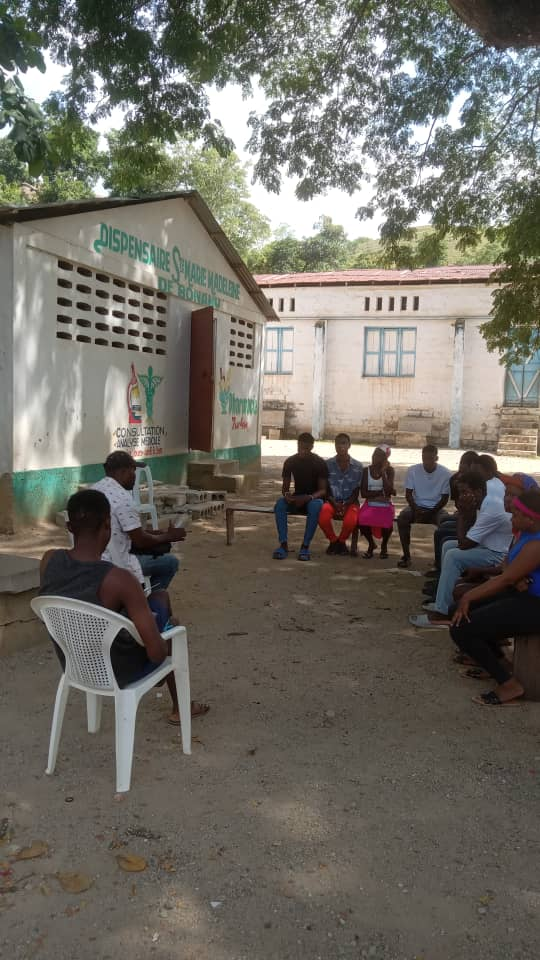

Milot, Nord, Haïti · Depuis 2011
Jèn ayisyen yo bezwen travay
Une solidarité économique entre donateurs d'impact de la diaspora
et partenaires locaux pour l'accès à l'emploi des jeunes Haïtiens vulnérables

Tu veux un emploi, une formation, un encadrement. Rejoins une coopérative qui te donnera les outils pour construire ta vie.
RejoindreTu as un terrain, un atelier, un commerce. KONKRET te connecte à des jeunes formés, sérieux, prêts à travailler.
Trouver des TalentsTu es une organisation, une institution, un citoyen engagé. Mets tes ressources au service de la jeunesse haïtienne.
S'engagerKONKRET est une initiative d'économie solidaire haïtienne organisant l'emploi des jeunes haïtiens comme la solution principale aux dérives socio-économiques que connait Haïti. Notre modèle repose sur la coopérative... la formation professionnelle et socio-émotionnelle... et la propriété commune des ressources productives.
Depuis 2011, nous opérons à Milot, Trou-du-Nord et Limonade dans le Nord d'Haïti. Nous croyons que le travail digne est la fondation de toute reconstruction sociale. Chaque emploi créé est un acte de résistance économique.
En savoir plus sur KONKRET
Offres de travail agricole, mise en réseau avec des employeurs locaux, formation et accompagnement individualisé pour chaque jeune intégré.
Apprentissage des compétences techniques et agricoles adaptées au tissu économique local... avec des formateurs ancrés dans la réalité haïtienne.
Développement de la confiance, de la résilience et des aptitudes relationnelles. Parce que le travail digne commence par la dignité intérieure.
Nourriture pour tous. Les terres, les outils et les récoltes appartiennent à la coopérative. Ce que nous construisons ensemble reste à tous.

"Grâce à KONKRET, j'ai reçu une formation et j'ai enfin un travail utile et respecté."
Jean-Marie · Membre, Milot"Mon terrain était abandonné. Aujourd'hui, il nourrit 3 familles. Merci KONKRET!"
Marie-Lourdes · Partenaire agricole, NordChaque gourde investie doit produire un résultat visible dans la communauté. Pas de rapport de façade... des vies transformées, des terres cultivées, des familles nourries.
Le modèle coopératif n'est pas un slogan. Les comptes sont ouverts, les décisions sont collectives, et les bénéfices reviennent aux membres qui travaillent.
La terre est la première richesse d'Haïti. Nous cultivons avec respect... en préservant les sols pour les générations qui viendront après nous.